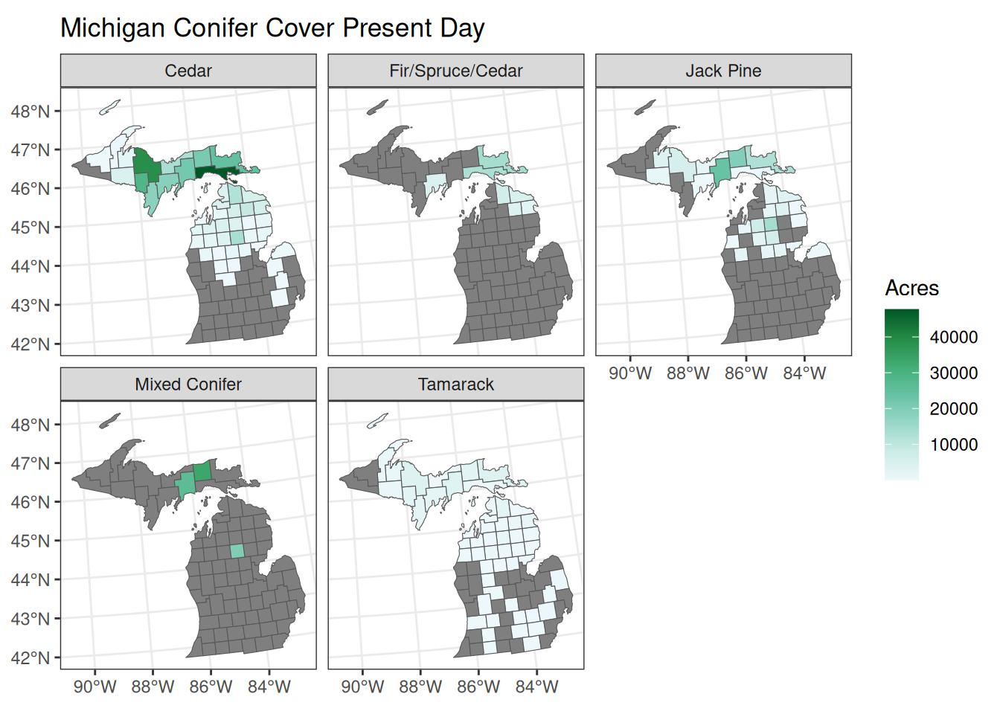

Code
library(tidyverse)
library(ggplot2)
library(dplyr)
library(knitr)
library(gt)
library(sf)
options(scipen = 999)Rachel Adams
Timothy Hooten
Mary Jane Moncman
Rachel Sackett
Christin Toney
December 8, 2024
Michigan is a beautiful state that covers more than 36.6 millions acres. Currently, more than 20 million acres of that is considered forested land.
For this project, we will be focusing on native conifer forests in Michigan, comparing cover type and acreage per county in the 1800s and now.
Michigan conifer forests date back more than 13,000 years, when the last of the glaciers that once covered the state began retreating north. Spruce, tamaracks, and balsam firs came first. Red pine, jack pine, and hemlock followed, along with oaks, elms, maples, and hickories. Beeches are the most recent, being introduced roughly 7,000 years ago.
Around 12,000 years ago, the Paleo-Indians (more specifically, the Clovis people) migrated to Michigan following the glacial retreat. The Clovis people were the original stewards of the land, passing down forest management systems until the European settlements began and changed the landscape of Michigan.
Fast forward to the Revolutionary War: the U.S. government had a lot of debt to pay after gaining independence from Britain, particularly towards veterans. With wide stretches of available land past the Appalachian Mountains, they decided to trade veteran’s unpaid wages for land.
Thus, we lead into the basic land survey systems that were set up by the government. Legislation passed that defined the systems the U.S. would use, and in 1815, Michigan implemented these systems and truly began to see what they had to work with. They started these surveys in the lower east corner of the Lower Peninsula and then proceeded north and west over into the Upper Peninsula. Most of this work was done in the 1830s and 1840s, and was mostly completed by the 1860s. These surveys, some more thorough than others, are now available in the State Archives of Michigan in Lansing. In 2015 the Michigan Department of Natural Resources digitized these surveys and made the data publicly available, which is how we found one of the datasets we are working with.
Once the land surveys were complete, the landscape of Michigan changed quickly. There are several factors that contributed to the deforestation of Michigan, the largest of which, of course, is the logging industry. Lesser factors include the clearing of land for agriculture and settlements. Michigan was a very attractive place to settle, having an abundance of both valuable timber and rich agricultural land. Settlers flocked to Michigan to take advantage of the abundance of high quality, high value timber. With Michigan’s extensive rivers and waterways, loggers had a very convenient way to transport timber by floating it downstream. Clear cutting decimated the conifer population, while also leaving plenty of slash (forest floor litter) behind as forest fire fuel. European settlers had discontinued Michigan indigenous peoples burn practices, and the left over slash contributed to massive wildfires in the 1870s. Michigan suffered major forested land losses as a result of these fires. In addition to forested land loss, hundreds of people died. The effects of this had a deep impact on the population, who were becoming increasingly aware of the negative impact that clear cutting and over logging was having on Michigan.
As lumber availability became more limited, the logging industry moved north, leading to the rapid decline of conifer forests in the late 1900s. A particularly staggering logging operation led by the David Ward estate in Manistee cut down over 400 million board feet of pine in just 12 years.
Timber barons would clear cut land and then let ownership revert to the state. Once lumber booms were over, ghost towns were left with messy forests struggling to recover.
As one could imagine, the people were very tired of the relentless and reckless logging of Michigan’s forests, and conservation efforts started appearing around the state. Today we have 78 state parks, 19 state recreation areas, 6 state forests, and 5 state scenic sites. About 4 million acres are in the state forest system. There is also a large amount of land managed privately.
The goal of this project is to provide education about the history of Michigan’s conifer forests and the effects of logging in Michigan, and to contrast conifer forest size and cover type from the 1800s with current conifer forest size and cover type, as compiled by the Michigan Department of Natural Resources.
Thankfully the Michigan DNR makes a large amount of data public, which is how we found two of the data sets that we are working with. One, ‘Michigan Circa 1800 Presettlement Vegetation Cover’, shows the original surveyors notes from the initial surveying of Michigan. Our second one, ‘DNR Forest Inventory Open Data - Stand Covertype’, is the current survey by the state.
Other assistance came from PHD students Joe Young and Grayson White, both of the Michigan State University Forestry Department, both of which provided additional relevant material to support our project. ‘DNRStands_Counties_JY.csv’ is an improved version of the original DNR dataset that Joe added county to. Grayson provided ‘MI_counties_polygons.rds’ and this dataset helped us create some of the graphics we have to illustrate our project.
This data shows the distribution and size of conifer forests in Michigan in the 1800s.
We will be using the tidyverse, ggplot2, dplyr, knitr, gt, and sf packages for our analyses.
We read the CSV for our 1800s dataset into R using this code:
Considering that the original dataset was massive, we needed to do a significant amount of data wrangling to slim the data. Here is the code chunk we created to slim the data into a usable and useful size for our project:
Forest_Inventory_1800 <- Forest_Inventory_1800 %>%
filter(COVERTYPE %in% c("Fir/Spruce/Cedar Swamp", "Low Conifer Swamp", "Tamarack Swamp", "Cedar Swamp", "Jack Pine")) %>%
rename(County = CNTYNAME,
Cover_Type = COVERTYPE,
Acres = AREA_AC) %>%
select(County, Cover_Type, Acres) %>%
mutate(Cover_Type =
case_when(
Cover_Type == "Fir/Spruce/Cedar Swamp" ~ "Fir/Spruce/Cedar",
Cover_Type == "Low Conifer Swamp" ~ "Mixed Conifer",
Cover_Type == "Tamarack Swamp" ~ "Tamarack",
Cover_Type == "Cedar Swamp" ~ "Cedar",
Cover_Type == "Jack Pine" ~ "Jack Pine"
)) %>%
group_by(County, Cover_Type) %>%
summarize(sum_acres = sum(Acres)) %>%
rename(Acres = sum_acres) %>%
arrange(desc(Acres))
Forest_Inventory_1800 <- Forest_Inventory_1800 %>% ungroup() %>%
complete(County, Cover_Type, fill = list(Acres = NA))We wanted to show a summary of the acreage of conifer cover type, so we used this code to create a table:
We adjusted the column names on the table by using this code chunk:
| Cover Type | Acres in 1800s |
|---|---|
| Cedar | 1254054.6 |
| Fir/Spruce/Cedar | 821703.3 |
| Jack Pine | 596806.0 |
| Mixed Conifer | 2989183.4 |
| Tamarack | 907347.1 |
As you can see, the predominant cover type pre-logging is ‘Mixed Conifer’. This category includes a broad range of conifers that were not more specifically recorded; however, we gathered from the original dataset that it was usually low swamp land that was, presumably, more difficult to get to. The second most prominent type is ‘Cedar’.
We created a graphic using ggplot to show the the distribution of each cover type more broadly by general region. ‘Mixed Conifer’ forest types were more prominent in the Eastern and Western U.P. The Lower Peninsula had less acres of forested land in general, being a fairly even mix of all other conifer categories.
In order to separate by region, we used the rds dataset file ‘MI_counties_polygons’. We read it in like this:
We then had to use the select and rename functions:
We then used left join:
Here is the main code chunk we created for this ggplot graphic:
Forest_Inventory_1800_Av <- Forest_Inventory_1800 %>%
group_by(UNITNM, Cover_Type) %>%
summarise(Acres = mean(Acres)) %>%
mutate(UNITNM =
case_when(
UNITNM == "Eastern Upper Peninsula" ~ "Eastern U.P.",
UNITNM == "Northern Lower Peninsula" ~ "Northern L.P.",
UNITNM == "Southern Lower Peninsula" ~ "Southern L.P.",
UNITNM == "Western Upper Peninsula" ~ "Western U.P."
)) %>%
na.omit() %>%
ggplot(aes(x = UNITNM, y = Acres, color = Cover_Type)) +
geom_point(size = 4) +
theme_bw() +
labs(x = "Regions of Michigan", y = "Acres", color = "Cover Type", title = "Conifer Forests in the 1800s")To display the graphic, we entered this:
In addition to the table and ggplot graphic, we created a map using ggplot to show a visual of the distribution of conifers across the Upper and Lower Peninsulas. The Upper Peninsula and the northern half of the Lower Peninsula were the most heavily forested areas. We had to use a series of code chunks to create the map. Here is the first chunk we created:
Here is the second chunk:
This is the code chunk we created for the ggplot map:
This data shows the distribution and size of conifer forests in Michigan today. We read that CSV file in using this code chunk:
This dataset was also massive, so we did more data wrangling to slim it down to a usable and useful size. Here is the code chunk we created:
Current_Forest_Inventory <- Current_Forest_Inventory %>%
complete(NAME, CoverType, fill = list(ACRES = NA)) %>%
filter(CoverType %in% c(42200, 42201, 42211, 42220, 42250, 42260, 42320, 42330, 42340, 42350, 42560, 42370, 4310, 4311, 4312, 612, 6120, 6121, 6122, 6123, 6124, 6126, 6127, 6128, 6129, 613, 6130, 6131, 6132, 6133)) %>%
rename(Cover_Type = "CoverType",
County = "NAME",
Acres = "ACRES") %>%
select(Cover_Type, County, Acres) %>%
mutate(Cover_Type =
case_when(
Cover_Type %in% c(42320, 42330, 42340, 42370, 6122, 6123, 6124, 6130) ~ "Fir/Spruce/Cedar",
Cover_Type %in% c(42200, 42201, 42210, 42211, 42290, 42250, 42260, 42350, 4310, 4311, 4312, 612, 6125, 6127, 6128, 6129, 613, 6131, 6133) ~ "Mixed Conifer",
Cover_Type %in% c(42360, 6120, 6132) ~ "Cedar",
Cover_Type %in% c(42220, 42221, 6126) ~ "Jack Pine",
Cover_Type == 6121 ~ "Tamarack"
)) %>%
group_by(County, Cover_Type) %>%
summarize(sum_acres = sum(Acres)) %>%
rename(Acres = sum_acres) %>%
arrange(desc(Acres)) %>%
relocate(County)We wanted to show a summary of the acreage of conifer cover type, so we used this code to create a table:
We adjusted the column names on the table by using this code chunk:
| Cover Type | Current Acres |
|---|---|
| Cedar | 333247.01 |
| Fir/Spruce/Cedar | 49952.08 |
| Jack Pine | 117155.15 |
| Mixed Conifer | 79884.18 |
| Tamarack | 34802.29 |
In present times, Michigan is much less densely forested. The ‘Mixed Conifer’ category alone is reduced by more than 2.6 million acres. The ‘Cedar’ category is reduced by nearly a million.
This ggplot graphic shows the average acres of conifer forest divided into regions and filled with recorded cover types. Here is the first section of code we created:
Next, we joined the current forest inventory to the shape file:
Here is the main code we used to create the graphic:
Current_Forest_Inventory_Av <- Current_Forest_Inventory %>%
group_by(UNITNM, Cover_Type) %>%
summarise(Acres = mean(Acres, na.rm = TRUE)) %>%
mutate(Regions =
case_when(
UNITNM == "Eastern Upper Peninsula" ~ "Eastern U.P.",
UNITNM == "Northern Lower Peninsula" ~ "Northern L.P.",
UNITNM == "Southern Lower Peninsula" ~ "Southern L.P.",
UNITNM == "Western Upper Peninsula" ~ "Western U.P.")) %>%
na.omit() %>%
ggplot(aes(x = Regions, y = Acres, color = Cover_Type)) +
geom_point(size = 4) +
scale_fill_distiller(palette = "2") +
theme_bw() +
labs(x = "Regions", y = "Acres", color = "Cover Type", title = "Current Conifer Forests")To display the graphic, we entered this:
Cedars appear to be much more prominent today than they were in the 1800s. The Upper Peninsula is still much more forested than the Lower Peninsula, with the dominant cover types being ‘Mixed Conifer’, ‘Cedar’, and ‘Fir/Spruce/Cedar’.
This map shows the average acres of conifer forest by county. Here is the first code chunk we created:
We use group by and summarize here:
Here is the main code chunk we created to make the ggplot map:
ggplot() +
geom_sf(data = summarized_Current, mapping = aes(fill = Acres, geometry = geometry)) +
facet_wrap(~Cover_Type) +
theme_bw() +
scale_fill_distiller(palette = 2, direction = 1) +
labs(title = "Michigan Conifer Cover Present Day")
The distribution of conifers in Michigan remains fairly similar to the pre-logging estimates, just at a reduced number. Each cover type is generally in the same area they used to be, with some location drift.
Here we combine the data to show the difference in the size of conifer forests in the 1800s vs. today. We used a full join of the tables we created to combine the data onto one table.
We then mutated the data to show the difference of acres and the percentage of lost acres.
We renamed the columns and formatted the number of decimals that would be displayed here:
| Cover Type | Acres in 1800s | Acres in 2000s | Difference | Percentage Reduced |
|---|---|---|---|---|
| Cedar | 1,254,054.65 | 333,247.01 | 920,807.64 | 73.43 |
| Fir/Spruce/Cedar | 821,703.30 | 49,952.08 | 771,751.22 | 93.92 |
| Jack Pine | 596,806.04 | 117,155.15 | 479,650.89 | 80.37 |
| Mixed Conifer | 2,989,183.41 | 79,884.18 | 2,909,299.23 | 97.33 |
| Tamarack | 907,347.14 | 34,802.29 | 872,544.85 | 96.16 |
The datasets show that conifers in Michigan used to be more widely distributed, but have since, for the most part, become more lightly distributed everywhere. Cedars in particular have become more prevalent in the Upper Peninsula in recent years. This is likely due to their lesser desirability and timber value; when other more valuable species were removed, the lack of competition allowed them to expand their range.
Conifers are more prevalent in the Upper Peninsula than the Lower Peninsula, largely due to more agricultural and urban settings in the Lower Peninsula. While there has been significant recovery of the native forests, our project shows that Michigan forests are still only a fraction of what they used to be. With how populated Michigan is now compared to the 1800s, it is very unlikely that we will ever see a forest like what was present before European settlement.
Something to acknowledge, beyond the scope of this project, is climate change. With the gradual warming of the Earth, the native range of many conifers is slowly being pushed north. The implications of this are that it is highly unlikely we will see an increase of conifers in the Lower and Upper Peninsula without more intensive conservation efforts.
Keeping all of this in mind, we are very grateful for the conservation efforts that have allowed us to witness and experience the forests of old, if only in small areas. With the greatly decreased forested land in Michigan, there is no denying that humans are capable of changing the landscape indefinitely. We all have a duty to the environment, to keep what we have now and to try to recover what we lost.
We would like to thank our colleagues and professors for all the help, and for supporting our ambitions in this project; specifically Joe Young, Grayson White, and Andrew Finley for their assistance in RStudio.
We collectively acknowledge that Michigan State University occupies the ancestral, traditional, and contemporary Lands of the Anishinaabeg – Three Fires Confederacy of Ojibwe, Odawa, and Potawatomi peoples. In particular, the University resides on Land ceded in the 1819 Treaty of Saginaw. We recognize, support, and advocate for the sovereignty of Michigan’s twelve federally-recognized Indian nations, for historic Indigenous communities in Michigan, for Indigenous individuals and communities who live here now, and for those who were forcibly removed from their Homelands. By offering this Land Acknowledgement, we affirm Indigenous sovereignty and will work to hold Michigan State University more accountable to the needs of American Indian and Indigenous peoples.